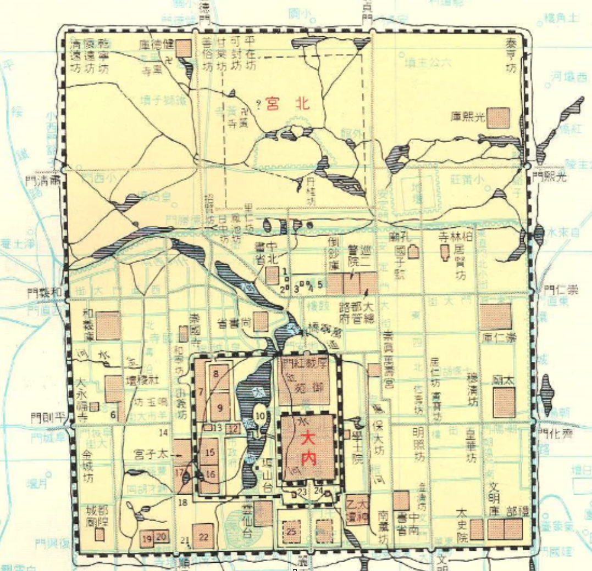
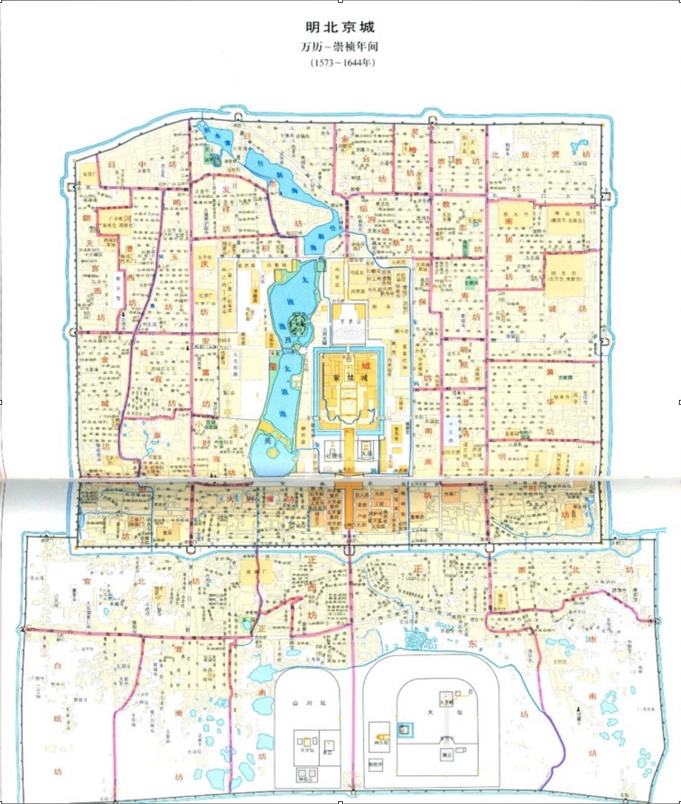
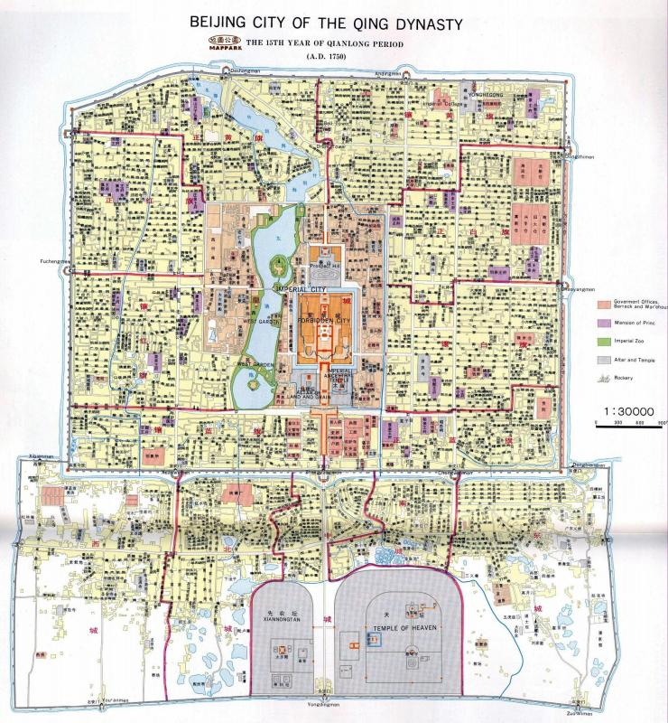
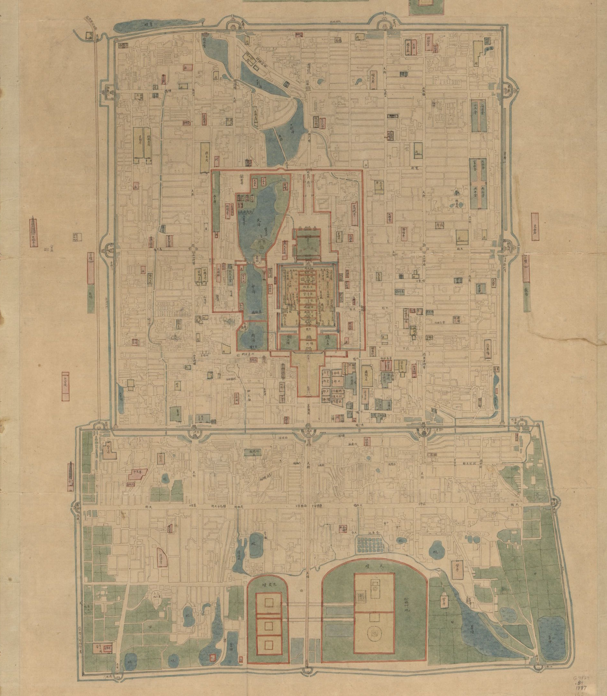
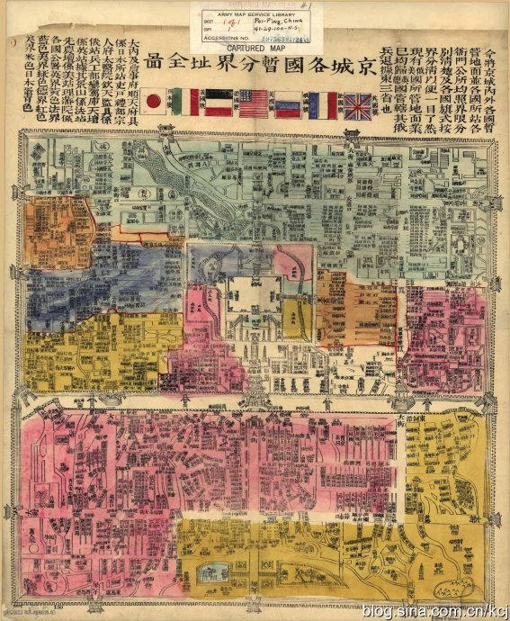
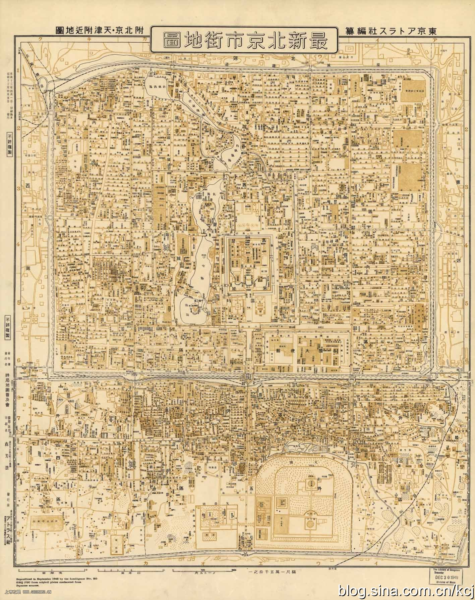
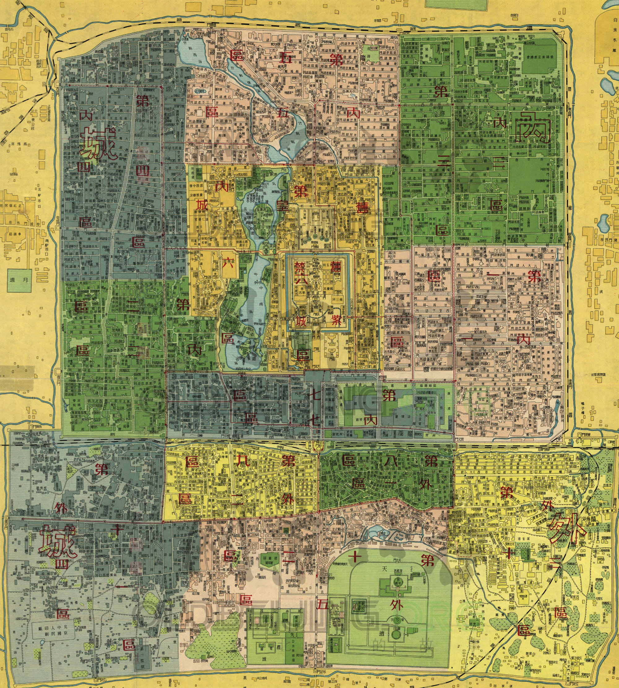
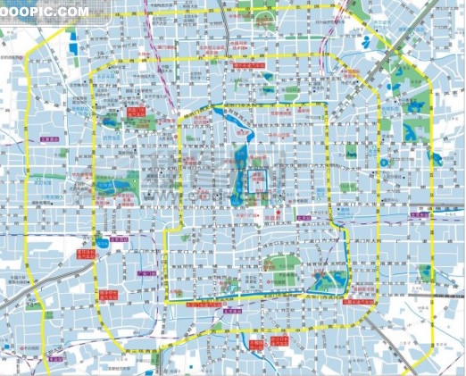
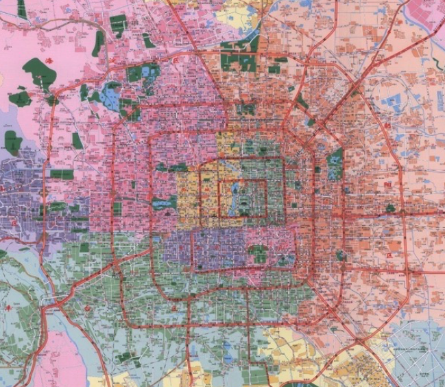
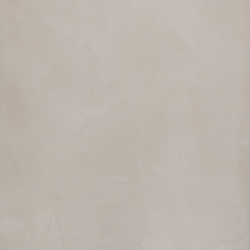

Beijing first emerged as the political center of China as Dadu in the 12th century, the capital of the Mongolian Empire.
As the first dynasty based in Beijing, the capital city changed a lot during those years. The lay-out of the city is in accordance with Confucianism and Centralization of Power, and was divided into inner city and outer city.
Ming Dynasty Beijing(1573)
The capital city of Ming Dynasty was developed from that of Yuan Dynasty. In order to defend invasion, the emperor narrowed the space and the north wall was moved inside for 5 li (2.5km). New city walls were built and the shape of the imperial city was approximately the same like the 2nd ring road of Beijing nowadays.
It is also during this period when some of the most famous monuments of anicent Beijing are built, including the Forbidden Palace, Temple of Heaven, and Qianmen Gate.
Forbidden PalaceTemple of Heaven
Qing Dynasty(1700)
The installation of the new Manchu dynasty brought drastic changes to Beijing. Jing Mountain was piled up and worked as the highest point of Beijing. Inner city and outer city were governed separately. The most significant political character is 8-flag hierarchy. People living in different districts belonged to different groups, with the Manchus living the central quarters, and the ethnic Chinese living the outer city.
Jingshan ParkSummer Palace(Outside of Map)Beihai Park
Qing Dynasty(1861)
Different gates of Beijing played an important role. Lots of people traded here and commercial activities were active at that time. Dongbian Gate was used for goods delivery. Zhengyang Gate was left especially for officials. Many traditional brands were established during that time.
Yonghe TempleQianmen Gate
Late Qing Dynasty(1900)
This is the map of Beijing in 1900. Although the Qing family−also known as Manchu’s−controlled China, foreign nations began to increase their influences. At the top of the map, you can find national flags of countries such as Japan, Italy, United Kingdom and the United States. Different colors in the map represent the country that controlled the area.
Chongwenmen Outer StreetDi'an Gate Outer Street
Beijing, WWII
This is the map of Beijing in 1938. At that time, China was fighting the second Sino-Japanese War. Prior to 1949, where industrialization became a primary urban policy, there were traditional cities throughout the country. These traditional cities separated specialized areas by neighborhoods. The street networks and major architectural elements were aligned in the cardinal directions. Most buildings were built low to the ground to highlight the more monumental structures. Like most western countries, China did not begin to develop its urban center until economic practice shifted toward industrialization.
Da Xiangfeng HutongHufang Road
Beijing under the People's Republic
With the coming of rule of the Communist Party in 1949, planning began to change to accommodate the vision that urban areas should be production zones instead of consumption areas, relying on rural production. Mao’s socialist vision did not mesh well with overcrowded slums, inadequate transportation networks, and crumbling monuments. Instead, he called for production centers, industrial development, and places of employment where communities could become self-sufficient communities.
Qianmen StreetWest Chang'an Street
Opening and Reform
In late 1970s, China transitioned from a planned economy to a more open economy and Beijing evolved into an economic production center. The number of houses increased by 97%, residential area increased by 49%, at the same time that residential area per person reduced by 24% (Koshizawa, 1978). In the years following the Cultural Revolution (1966-1976), cities evolved towards suburban agriculture, light industry, small factories, and shift from large-scale urbanism. The one to two story buildings from the previous era were soon replaced by three to five story rectangular buildings (Gaubatz, 1999). Neighborhoods were planned and modified to accommodate all aspects of life and the primary forms of transportation were the large streets between the high walled compounds. Since the 1970s there has been a shift from Mao’s vision for a soviet state to the contemporary cities of the globalized world.
Zhushikou West StreetDashila Street
Beijing in the 21st Century(2005)
Over the past forty years, Beijing has transformed from a socialist city into a contemporary economic hub. In 1987, constructors began to build the second ring road and a freeway with ten flyovers to alleviate transportation pressure (Yang, Cai, Ottens, & Sliuzas, 2013). A few years prior to the addition of the second ring road, Beijing had built Line 2 of the metro system, underlapping the second ring road. Over the next twenty years, Beijing expanded its ring road network and its metro system to accommodate the rapid urbanization in the city. Transportation network expansion and construction projects followed urban development. There has been rapid and fervent land and housing speculation in the Beijing that has forced rent prices to increase and has also led to urban sprawl, impacting the transportation networks in and around the city.
Olympic StadiumFifth Ring Road










You've arrived at Beijing of today. Explore around and see what you can discover! If you have your own experiences, add them to the map above!